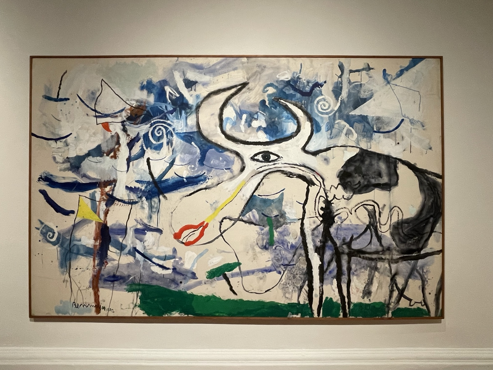

I arrived in Santiago, the capital of Chile. In Latin America I'd been to Costa Rica, Nicaragua, and Mexico, but this was my first time in South America. The country on the other side of the Andes — that was about as far as my mental image went.
October in Santiago is spring. The Southern Hemisphere flips the seasons, so just as Japan starts heading into autumn, here flowers begin to bloom. The sky is impossibly blue. Maybe it's the dry wind blowing down from the Andes — humidity is low and the air feels crisp.
Palacio de los Tribunales
Walking through downtown, a heavy stone building catches the eye. The Palacio de los Tribunales (Supreme Court). A grand Neoclassical building with a bronze statue and monuments out front. It sits in Santiago's civic center, the historic core that goes back to colonial times.

The Chilean National History Museum and the presidential Palacio de La Moneda are also nearby. European-style architecture lined up under a blue sky gave both impressions: "I'm in South America" and "this is more European than I expected." Chile retains a lot of its Spanish colonial architectural heritage.
To the Museums
From downtown, I walked toward Parque Forestal. The Chilean National Museum of Fine Arts and the Museum of Contemporary Art are clustered here.

What was on display were paintings and sculptures by Chilean and Latin American artists. Latin American contemporary art often has politics and society as its backdrop, with energy that's direct and worth taking time over. I stood in front of one large abstract piece longer than I planned.
Santiago is interesting just to walk around in. Heavy buildings, wide plazas, and people's daily life carrying on within them. From the first day, I thought it was a good city.